Operaciones con fracciones
1. SUMA Y RESTA
Para sumar o restar fracciones necesitamos que tengan el mismo denominador, entonces sumamos o restamos los numeradores:
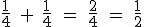
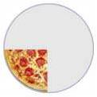 + = 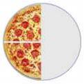 = 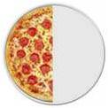
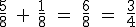
+ 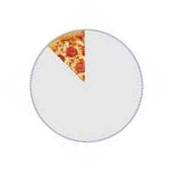 = =
NOTA: Si no tienen el mismo denominador, reducimos a común denominador primero:
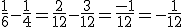
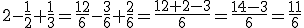
2. MULTIPLICACIÓN
Para multiplicar fracciones, multiplicamos los numeradores y los denominadores:
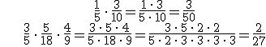
3. DIVISIÓN
La inversa de una fracción es otra fracción a la que hemos intercambiado el denominador y el numerador :
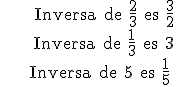
NOTA: Si multiplicamos una fracción por su inversa, el resultado es 1:
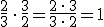
Para dividir fracciones:
- Multiplicamos el numerador de la primera fracción por el denominador de la segunda, y ponemos el resultado en el numerador.
- Multiplicamos el denominador de la primera por el numerador de la segunda y ponemos el resultado en el denominador.
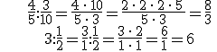
De otra manera, podemos dividir fracciones multiplicando la primera por la inversa de la segunda:
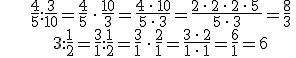
NOTA: Recuerda la jerarquía de las operaciones:
Ejercicio. Calcula:
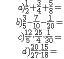
Soluciones:
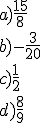
Obra publicada con Licencia Creative Commons Reconocimiento No comercial Compartir igual 3.0